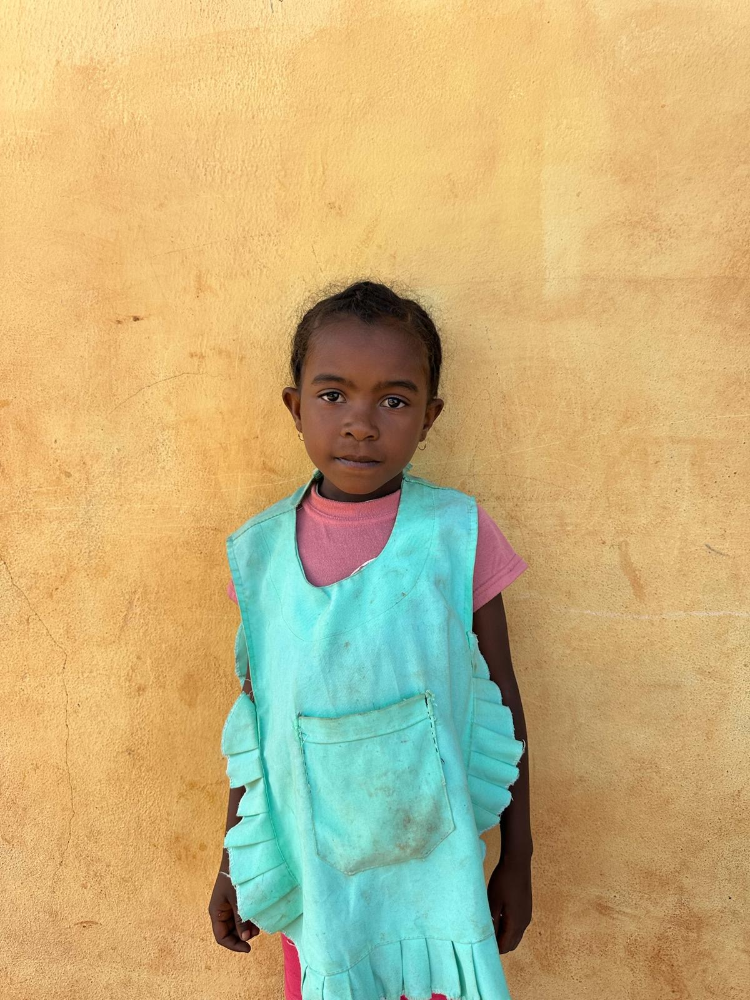

Stellah
7 anni
...
Missione delle Suore di [Nome Istituto]
Con 20€ all'anno puoi aiutare a distanza un bambino: garantisci cibo, istruzione, e puoi seguire la sua crescita anno dopo anno insieme alle suore che si prendono cura di lui ogni giorno.
Scopri come aiutareognuno di loro ha una storia diversa e ha bisogno di un piccolo aiuto per crescere

7 anni
...
9 anni
Gioca a calcio...
5 anni
...
Hai domande sull'adozione o vuoi sapere come sta il tuo bambino? Scrivici, ti risponderemo con affetto.
Scrivi su WhatsApp